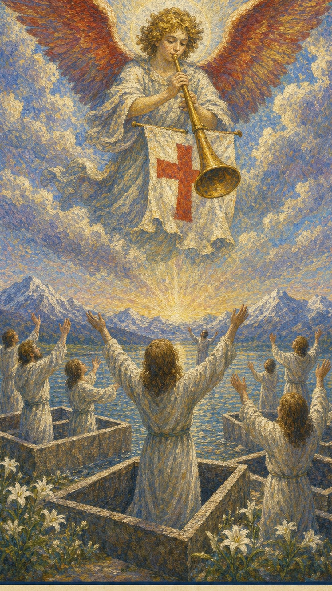

— 貳 · CORRESPONDENCES
对应要素Esoteric Correspondences
- 元素 Element
- 火觉醒、召唤、复盘、重生
- 星座 / 行星
- 冥王星 / 火元素觉醒、召唤、复盘、重生
- 生命之树 Tree of Life
- Shin路径与此牌的精神功课相连
- 希伯来字母
- Shin（牙齿）通过觉醒理解当前阶段的命运功课，在回顾与清算中迎接重生


审判是一声唤醒灵魂的号角。天使在云端展翅，吹响号角，传播上天的福音——这是审判日，沉睡已久的灵魂一个个走出自我困惑的内心世界，站立在天使的翅膀下，以感恩的心聆听召唤。它要求人回顾过去，承认自己的选择，然后从旧身份中站起来。
← 返回大厅 / 选择其它卡牌审判是一声唤醒灵魂的号角。天使在云端展翅，吹响号角，传播上天的福音——这是审判日，沉睡已久的灵魂一个个走出自我困惑的内心世界，站立在天使的翅膀下，以感恩的心聆听召唤。它要求人回顾过去，承认自己的选择，然后从旧身份中站起来。
当这张牌出现，说明你正遇到“觉醒、召唤、复盘、重生”的课题。它既可能表现为外部事件，也可能是内心正在成熟的一个阶段。审判是大阿尔卡那倒数第二张牌，可视为对前二十张人生旅程的回顾与自省：在接近自我认知极限的“世界”之前，我们需要反省过去、自我剖析，认清并洗涤曾经的错误、坚守曾经的正确，才能最终走向成功之门。它常以“会审”的形式出现——正式或非正式的考试、考核、检查——你过去的努力将以客观的形式展现出来，付出有机会获得奖赏，冤案有机会公诸于众。有时正位的审判甚至意味着，当事人其实早已知道答案，只是来寻求一个印证，因为一切都已清晰地呈现在眼前。
天使吹响号角，棺木中的人们起身回应，象征复活与清算。天使是信使，象征高意识与神圣消息的传递；那振奋人心的号角，是觉醒的召唤，宣告着重要事件的到来。下方裸体的人群从打开的坟墓中起身，张开双臂——裸露象征真实、无所隐藏与重新出生，开放的坟墓象征旧生活的结束与转变。这一幕在基督教中正是死人复活的时刻，与逆位宝剑十那种“否极泰来”之意暗暗相通：纵然过去一直被打压，此刻翻案也并非不可能。
通过觉醒理解当前阶段的命运功课，在回顾与清算中迎接重生
审判描述的是人事物已经处在完结的阶段——这个阶段是对已经发生之事进行总结，而这种总结是客观的，并非主观感受。它的特点是：不可对已经发生的人事物进行更改。换言之，你过去的所作所为将被如实地衡量，因果清晰可循；与其纠结于结果，不如坦然接受这份客观的清算，并据此做出新的决定。

天使吹响号角，棺木中的人们起身回应，象征复活与清算。
红色十字象征平衡、治疗与加护，在基督教传统中也代表信仰与复兴。
信使，象征高意识、觉醒，以及高级能量或消息的传递。
觉醒的召唤，宣布重要的宣示或事件的到来。
可能代表不确定，但在此作为天使出现的背景，突出了启示与神圣信息的主题。
裸体表征真实、无隐藏与重新出生，代表坦诚面对自我。
坟墓打开，象征结束、转变与旧生活的终结。
象征情感与无意识的深处，以及遇见深层真理的可能。
代表稳固与永恒，以及超越日常生活的高位目标或障碍。
图片底部的文字直接标明牌名，提供直接的指示与警示。
人群聚集象征社区、家庭或集体意识。
展翅表示自由、胜利与灵魂上的提升。
似在表示欢迎或接受高级力量、更高意识的阶段。
象征和平与清晰的思想。
象征情感与心灵状态的平静或澄清。
对应此阶段在人生旅程中的功课。
数字 20 是 2 与 0 的组合，约化为 2（女祭司），也呼应着一种内在的倾听与回应。它紧随太阳的圆满之后，转入对整段旅程的总结与清算。20 指向经验累积后的转折与整合，引导人从事件表层进入更深的精神功课。
在解读时，审判提醒我们：事件表面的顺逆终会变化，真正值得把握的是牌面所揭示的内在功课。号角声响起，重要的不是审判本身，而是你是否愿意诚实地回应它、从旧的自己中起身。

正位的审判表示这股能量正在逐渐清晰。它的提示语是：觉醒的时刻、重生的机会、转折的点、清醒的认知、理解的深化、改变的决定、接受的态度、成长的体验、洗涤的过程、复活的象征。顺着牌面主题行动，诚实地面对过去与召唤，事情会显露出可被把握的方向。
觉醒，复盘，召唤，宽恕，重生，决定，清算，复活的喜悦，命运好转，作品公然发表，得到好消息，自信，判断，识别，评价，判决，新生，复兴，再生，赦罪，赦免，无罪，裁决，改变，更新
火 · 觉醒、召唤、复盘、重生
感情中，审判代表关系进入与“觉醒、召唤、复盘、重生”有关的阶段：真心的恋情、感情的公开，即便发生过争执也仍有和好的希望，是爱的使者出现、破镜重圆、深信爱的奇迹的时刻。它常意味着痛苦结束后的新生与复苏。单身者会被真诚、愿意承担的人吸引；有伴侣者则到了该做最后决定、深化彼此理解的时候。
事业学业上，审判提示一个觉醒与转折的时刻：有复职的可能、事业脱离窘境、岗位变更或升迁，考试顺利、学业更上一层楼。它要求你保持清醒的头脑，在重要的抉择面前不因时间压力而草率，必要时大刀阔斧地改革，变化才能盘活全局。
人际关系中，审判象征关系的修复与和解：财物失而复得、获意外之财、友情的裂缝得以弥合、与多年老友重新取得联系、与旧友言归于好，与他人建立彼此信赖的关系。财富方面正出现重要的转机，应当好好把握，可能因此翻身。
健康生活上，审判提示身心状态与当前的心理课题相连，常意味着一段康复与重生：久治不愈的状况可能迎来转机，疲惫的身心得到唤醒与修复。它鼓励你诚实地复盘自己的生活习惯，把过去忽视的身体信号重新纳入觉察。适当的旅游可以放松最近疲惫的身心，音乐也能帮你减轻疲惫——退一步海阔天空，以更新过的姿态重新出发。
旅游可以放松最近疲惫的身心，音乐可以帮你减轻疲惫，退一步海阔天空，自信的演讲。若问具体事件，正位多表示事情进入清算与重生的关键阶段。主动去理解它的意义、诚实回应这声召唤，会比单纯等待结果更有力量。

逆位的审判表示这股能量受阻、失衡或被错误使用，那声召唤被听见了却被刻意忽略。它的提示语是：拒绝接受改变、逃避责任、自我否定、不愿面对现实、固守旧观念、过度批评、感到内疚、过去的阴影、无法释怀、恐惧改变。此时最重要的是先看清自己是否正在抗拒这张牌所要求的功课——号角已经响起，问题只在于你是否还想继续装睡。
逃避召唤，自我批判，迟迟不决，拒绝改变，旧事纠缠，一蹶不振，犹豫未定，行为不妥，生活散漫，自我怀疑，没有把握，良心受到谴责，佯装未见，坏消息，逃避，停滞不前
火 · 受阻、延迟、反复与失衡
感情中，逆位的审判常表现为嫉妒心过重、辜负对方的好意、无法向对方敞开心扉，或旧情难忘、不舍也得舍，使恋情陷入停滞、拒绝复合，无法释怀过去的痛苦。它提示感情容易出现逃避、过度的自我保护与对现状的拒绝。关系若一直无法推进，需要回到双方真实的需求。
事业学业上，逆位的审判常表现为求知遇阻、事业受挫、面对困难一蹶不振，颇感心有余而力不足，或缺少目标、没有进展、固守现状、害怕改变而错过机会。先看清未来的方向，解决内心的犹疑，再决定下一步。
人际方面要小心投射与不公平的交换。逆位的审判常表现为夹在朋友之间左右为难、与旧友无法和好、对朋友感到失望，或因过去被好友背叛而心存阴影、令人误会。财富方面则可能丢失财物、遗失重要物品，产生一些亏损。适合回到理性评估与长期规划，在没弄明白之前不轻易表态、不站队。
健康上，逆位的审判常提示一种因逃避与自我批判而累积的内耗：旧的伤痛与悔意迟迟无法释怀，生活作息变得散漫无规律，身心因之疲惫。它提醒你不要一味沉溺于自责或装作没看见问题。建议减少过度的自我谴责，正视那些被回避的身心信号，重新建立有规律的生活节奏，让自己从旧事的纠缠中真正起身。
重返故土，因贪玩导致身心疲惫，生活无规律。事情可能延迟、反复或暴露隐藏问题——先正视并修正模式，再谈结果。

当审判出现在三牌阵中，它提示你从时间维度观察这股能量：过去留下的结构、现在显现的课题，以及未来需要整合的方向。点击下方卡牌揭示隐秘启示。
可能充满了教训与经验，审判鼓励你从中汲取智慧，释放过去的包袱，准备迎接新的机遇。
是一个觉醒的时刻，你可能正意识到自己的潜力与使命，这将激励你采取行动去实现目标与梦想。
预示重大的变革与进步，你可能会经历一次显著的转变，无论是职业上、个人发展还是精神层面。